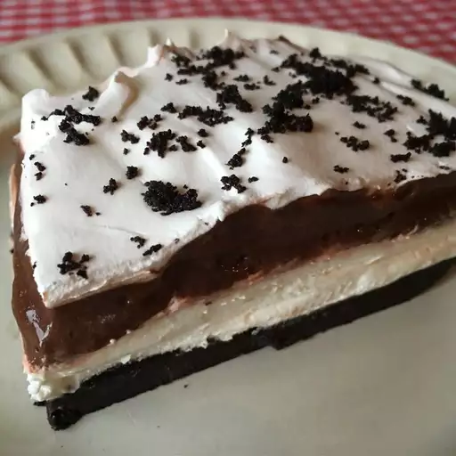

Cookies And Cream

Ingredients
- 1 (20 ounce) package chocolate sandwich cookies
- ½ cup butter
- 1 (16 ounce) container frozen whipped topping, thawed
- 2 (8 ounce) packages cream cheese
- 1 cup confectioners' sugar
- 2 cups milk
Directions
- Crush cookies into bite size pieces. Reserve 1 cup for top. Melt butter and mix with rest of cookies. Press into 9x13 pan. Put in freezer for 5 minutes.
- Blend 1/2 of the whipped topping, all of the cream cheese and confectioners' sugar. Spread over crust and place cake back in freezer.
- Prepare instant pudding with the milk according to package directions then spread over top of cake. Spread the remaining whipped topping on top of the pudding then sprinkle with the remaining cookies. Keep cake refrigerated.
Home